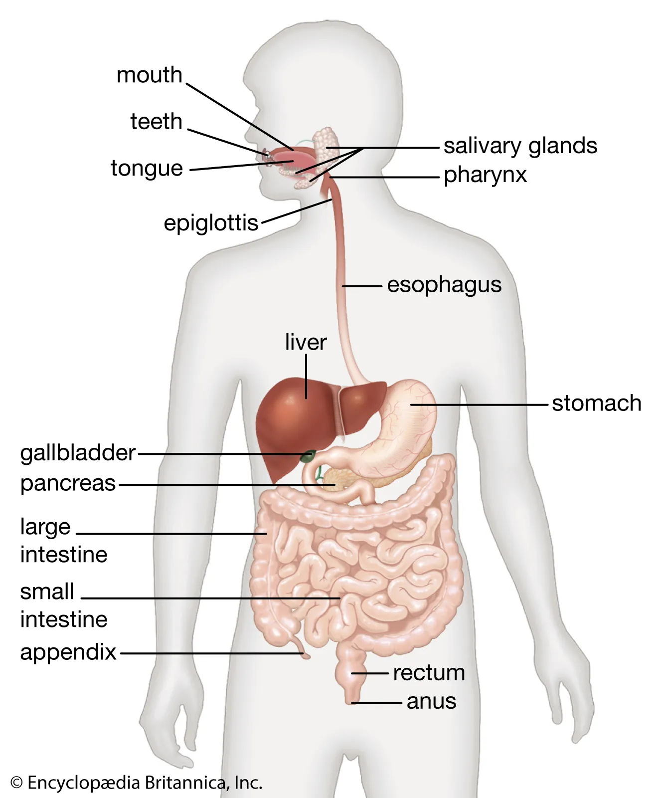
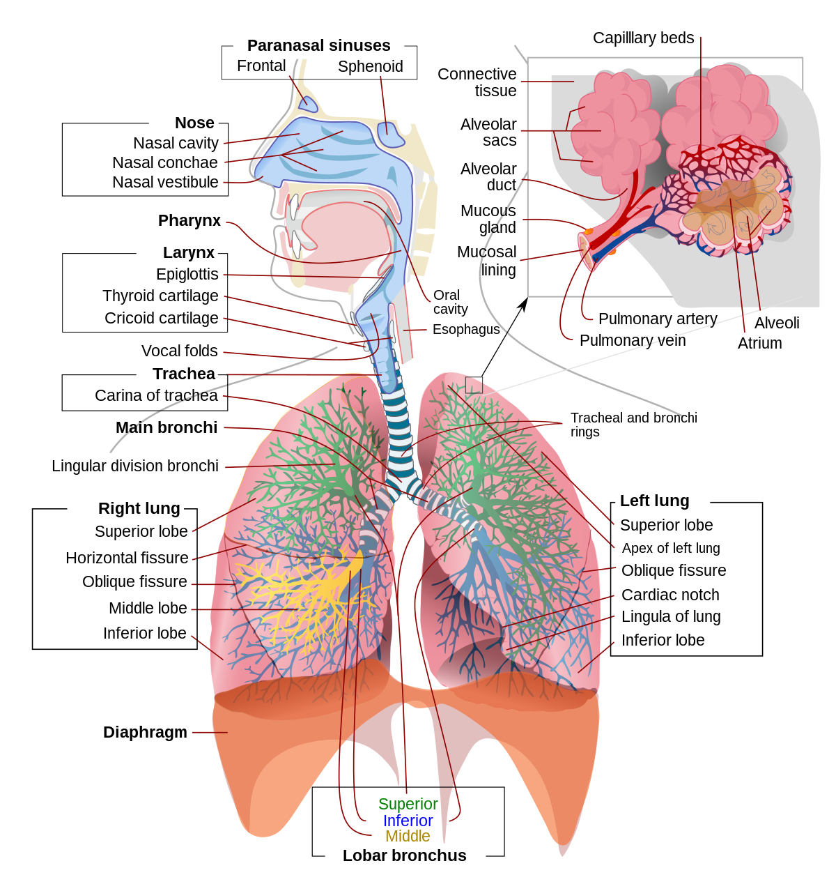
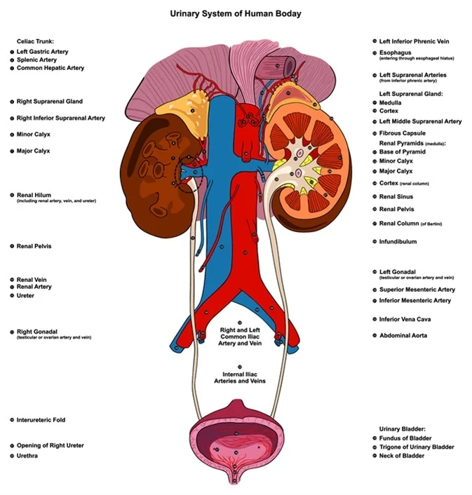

The human digestive system consists of the gastrointestinal tract plus the accessory organs of digestion (the tongue, salivary glands, pancreas, liver, and gallbladder). Digestion involves the breakdown of food into smaller and smaller components, until they can be absorbed and assimilated into the body. The process of digestion has three stages: the cephalic phase, the gastric phase, and the intestinal phase.
The first stage, the cephalic phase of digestion, begins with secretions from gastric glands in response to the sight and smell of food. This stage includes the mechanical breakdown of food by chewing, and the chemical breakdown by digestive enzymes, that takes place in the mouth. Saliva contains the digestive enzymes amylase, and lingual lipase, secreted by the salivary and serous glands on the tongue. Chewing, in which the food is mixed with saliva, begins the mechanical process of digestion. This produces a bolus which is swallowed down the esophagus to enter the stomach.
The second stage of digestion begins in the stomach with the gastric phase. Here the food is further broken down by mixing with gastric acid until it passes into the duodenum, the first part of the small intestine.
The respiratory system is the network of organs and tissues that help you breathe. It includes your airways, lungs and blood vessels. The muscles that power your lungs are also part of the respiratory system. These parts work together to move oxygen throughout the body and clean out waste gases like carbon dioxide. The respiratory system (also respiratory apparatus, ventilatory system) is a biological system consisting of specific organs and structures used for gas exchange in animals and plants. The anatomy and physiology that make this happen varies greatly, depending on the size of the organism, the environment in which it lives and its evolutionary history. In land animals the respiratory surface is internalized as linings of the lungs. Gas exchange in the lungs occurs in millions of small air sacs; in mammals and reptiles these are called alveoli, and in birds they are known as atria.
These microscopic air sacs have a very rich blood supply, thus bringing the air into close contact with the blood. These air sacs communicate with the external environment via a system of airways, or hollow tubes, of which the largest is the trachea, which branches in the middle of the chest into the two main bronchi. These enter the lungs where they branch into progressively narrower secondary and tertiary bronchi that branch into numerous smaller tubes, the bronchioles. In birds the bronchioles are termed parabronchi. It is the bronchioles, or parabronchi that generally open into the microscopic alveoli in mammals and atria in birds. Air has to be pumped from the environment into the alveoli or atria by the process of breathing which involves the muscles of respiration.
The urinary system includes the kidneys, ureters, bladder and urethra. This system filters your blood, removing waste and excess water. This waste becomes urine. The most common urinary issues are bladder infections and urinary tract infections (UTIs).
The urinary system, also known as the urinary tract or renal system, consists of the kidneys, ureters, bladder, and the urethra. The purpose of the urinary system is to eliminate waste from the body, regulate blood volume and blood pressure, control levels of electrolytes and metabolites, and regulate blood pH. The urinary tract is the body's drainage system for the eventual removal of urine. The kidneys have an extensive blood supply via the renal arteries which leave the kidneys via the renal vein. Each kidney consists of functional units called nephrons. Following filtration of blood and further processing, wastes (in the form of urine) exit the kidney via the ureters, tubes made of smooth muscle fibres that propel urine towards the urinary bladder, where it is stored and subsequently expelled from the body by urination (voiding). The female and male urinary system are very similar, differing only in the length of the urethra.
Urine is formed in the kidneys through a filtration of blood. The urine is then passed through the ureters to the bladder, where it is stored. During urination, the urine is passed from the bladder through the urethra to the outside of the body. 800-2,000 milliliters (mL) of urine are normally produced every day in a healthy human. This amount varies according to fluid intake and kidney function.
